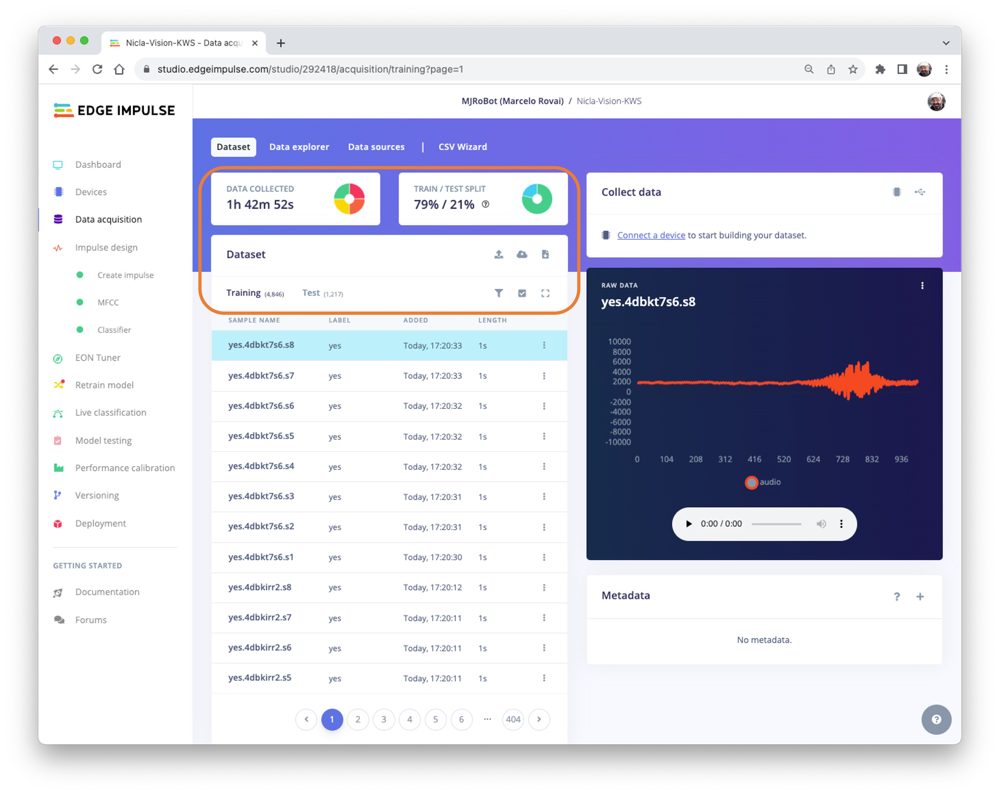
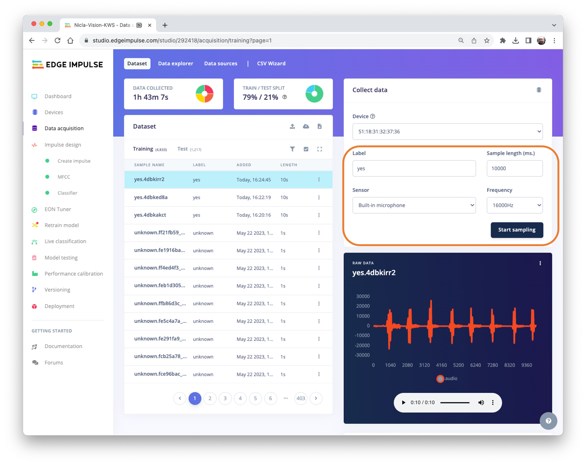
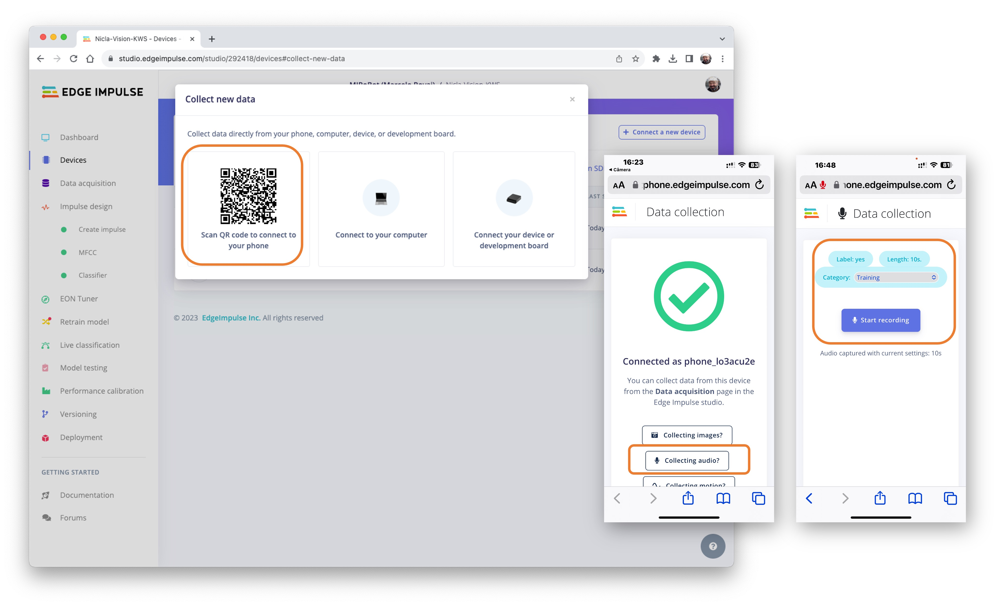
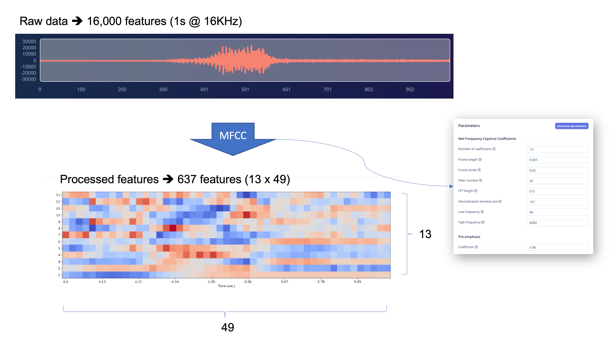

Keyword Spotting (KWS)
Introduzione
Dopo aver già esplorato la scheda Nicla Vision nelle applicazioni di Image Classification e Object Detection, stiamo ora spostando la nostra attenzione sulle applicazioni attivate tramite comando vocale con un progetto su Keyword Spotting (KWS).
Come introdotto nel tutorial Feature Engineering for Audio Classification, il Keyword Spotting (KWS) è integrato in molti sistemi di riconoscimento vocale, consentendo ai dispositivi di rispondere a parole o frasi specifiche. Sebbene questa tecnologia sia alla base di dispositivi popolari come Google Assistant o Amazon Alexa, è ugualmente applicabile e fattibile su dispositivi più piccoli e a basso consumo. Questo tutorial guiderà nell’implementazione di un sistema KWS utilizzando TinyML sulla scheda di sviluppo Nicla Vision dotata di un microfono digitale.
Il nostro modello sarà progettato per riconoscere parole chiave che possono riattivare un dispositivo o azioni specifiche, dando loro vita con comandi vocali.
Come funziona un assistente vocale?
Come detto, gli assistenti vocali sul mercato, come Google Home o Amazon Echo-Dot, reagiscono agli umani solo quando vengono “svegliati” da parole chiave particolari come “Hey Google” sul primo e “Alexa” sul secondo.
In altre parole, il riconoscimento dei comandi vocali si basa su un modello multi-fase o Cascade Detection.
Fase 1: Un piccolo microprocessore all’interno di Echo Dot o Google Home ascolta continuamente, in attesa che venga individuata la parola chiave, utilizzando un modello TinyML nel device (applicazione KWS).
Fase 2: Solo quando vengono attivati dall’applicazione KWS nella Fase 1, i dati vengono inviati al cloud ed elaborati su un modello più grande.
Il video qui sotto mostra un esempio di un Google Assistant programmato su un Raspberry Pi (Fase 2), con un Arduino Nano 33 BLE come dispositivo TinyML (Fase 1).
Per esplorare il progetto Google Assistant di cui sopra, consultare il tutorial: Building an Intelligent Voice Assistant From Scratch.
In questo progetto KWS, ci concentreremo sulla Fase 1 (KWS o Keyword Spotting), dove utilizzeremo Nicla Vision, che ha un microfono digitale che verrà utilizzato per individuare la parola chiave.
Il Progetto Pratico KWS
Il diagramma seguente fornisce un’idea di come dovrebbe funzionare l’applicazione KWS finale (durante l’inferenza):
La nostra applicazione KWS riconoscerà quattro classi di suono:
- YES (Keyword 1)
- NO (Keyword 2)
- NOISE (nessuna parola pronunciata; è presente solo rumore di fondo)
- UNKNOW (un mix di parole diverse da YES e NO)
Per progetti reali, è sempre consigliabile includere altri suoni oltre alle parole chiave, come “Noise” (o Background) e “Unknown”.
Il Flusso di Lavoro del Machine Learning
Il componente principale dell’applicazione KWS è il suo modello. Quindi, dobbiamo addestrare un modello del genere con le nostre parole chiave specifiche, rumore e altre parole (lo “unknown”):
Il Dataset
Il componente critico di qualsiasi flusso di lavoro di apprendimento automatico è il dataset. Una volta decise le parole chiave specifiche, nel nostro caso (YES e NO), possiamo sfruttare il dataset sviluppato da Pete Warden, “Speech Commands: A Dataset for Limited-Vocabulary Speech Recognition”. Questo dataset ha 35 parole chiave (con +1.000 campioni ciascuna), come yes, no, stop e go. In parole come yes e no, possiamo ottenere 1.500 campioni.
Si può scaricare una piccola parte del dataset da Edge Studio (Keyword spotting pre-built dataset), che include campioni dalle quattro classi che utilizzeremo in questo progetto: yes, no, noise e background. Per farlo, si seguono i passaggi seguenti:
- Download del dataset delle parole chiave.
- Unzip del file in una posizione a scelta.
Caricamento del set di dati su Edge Impulse Studio
Si avvia un nuovo progetto su Edge Impulse Studio (EIS) e si seleziona il tool Upload Existing Data nella sezione Data Acquisition. Si scelgono i file da caricare:
Si definisce l’etichetta, si seleziona Automatically split between train and test, e poi Upload data su EIS. Si ripete per tutte le classi.
Il dataset apparirà ora nella sezione Data acquisition. Notare che i circa 6.000 campioni (1.500 per ogni classe) sono suddivisi in set di Train (4.800) e di Test (1.200).

Acquisizione di Dati Audio Aggiuntivi
Sebbene disponiamo di molti dati dal dataset di Pete, è consigliabile raccogliere alcune parole pronunciate da noi. Lavorando con gli accelerometri, è essenziale creare un set di dati con dati acquisiti dallo stesso tipo di sensore. Nel caso del suono, questo è facoltativo perché ciò che classificheremo sono, in realtà, dati audio.
La differenza fondamentale tra suono e audio è il tipo di energia. Il suono è una perturbazione meccanica (onde sonore longitudinali) che si propagano attraverso un mezzo, causando variazioni di pressione in esso. L’audio è un segnale elettrico (analogico o digitale) che rappresenta il suono.
Quando pronunciamo una parola chiave, le onde sonore devono essere convertite in dati audio. La conversione deve essere eseguita campionando il segnale generato dal microfono a una frequenza di 16 KHz con ampiezza di 16 bit per campione.
Quindi, qualsiasi dispositivo in grado di generare dati audio con questa specifica di base (16 KHz/16 bit) funzionerà correttamente. Come device, possiamo usare NiclaV, un computer o persino il cellulare.
Utilizzo di NiclaV ed Edge Impulse Studio
Come abbiamo appreso nel capitolo Configurazione di Nicla Vision, EIS supporta ufficialmente Nicla Vision, semplificando l’acquisizione dei dati dai suoi sensori, incluso il microfono. Quindi, si crea un nuovo progetto su EIS e vi si collega la Nicla, seguendo questi passaggi:
Download del Firmware EIS più aggiornato e lo si decomprime.
Aprire il file zip sul computer e selezionare l’uploader corrispondente al sistema operativo:

Si mette NiclaV in Boot Mode premendo due volte il pulsante di reset.
Si carica il binario arduino-nicla-vision.bin sulla board eseguendo il codice batch corrispondente al sistema operativo.
Si va sul proprio progetto EIS e nella scheda Data Acquisition tab, si seleziona WebUSB. Apparirà una finestra; scegliere l’opzione che mostra che Nicla is paired e si preme [Connect].
Si possono scegliere quali dati del sensore raccogliere nella sezione Collect Data nella scheda Data Acquisition. Si seleziona: Built-in microphone, si definisce la label (per esempio, yes), la Frequency[16000Hz] e la Sample length (in milliseconds), per esempio [10s]. Start sampling.

I dati sul dataset di Pete hanno una lunghezza di 1s, ma i campioni registrati sono lunghi 10s e devono essere suddivisi in campioni da 1s. Cliccare sui tre puntini dopo il nome del campione e selezionare Split sample.
Si aprirà una finestra col tool Split.
Una volta all’interno dello strumento, si dividono i dati in record da 1 secondo (1000 ms). Se necessario, si aggiungono o rimuovono segmenti. Questa procedura deve essere ripetuta per tutti i nuovi campioni.
Utilizzo di uno smartphone e di EI Studio
Si può anche utilizzare il PC o lo smartphone per acquisire dati audio, utilizzando una frequenza di campionamento di 16 KHz e una profondità di 16 bit.
Si va su Devices, si scansiona il QR Code col telefono e si clicca sul link. Un’app, Collection, per la raccolta dei dati apparirà nel browser. Si seleziona Collecting Audio e si definisce la Label, la Length [lunghezza] dei dati catturati e la Category.

Si ripete la stessa procedura usata con NiclaV.
Notare che qualsiasi app, come Audacity, può essere usata per la registrazione audio, a condizione che si usino campioni di 16KHz/16-bit.
Creazione di Impulse (Pre-Process / Definizione del Modello)
Un impulse prende dati grezzi, usa l’elaborazione del segnale per estrarre le feature e poi usa un blocco di apprendimento per classificare nuovi dati.
Impulse Design
Innanzitutto, prenderemo i dati con una finestra di 1 secondo, aumentando i dati e facendo scorrere quella finestra in intervalli di 500 ms. Notare che è impostata l’opzione Zero-pad data. È essenziale riempire i campioni con degli ‘zeri’ inferiori a 1 secondo (in alcuni casi, alcuni campioni possono risultare inferiori alla finestra di 1000 ms sul tool di suddivisione per evitare rumore e picchi).
Ogni campione audio di 1 secondo dovrebbe essere pre-elaborato e convertito in un’immagine (ad esempio, 13 x 49 x 1). Come discusso nel tutorial Feature Engineering for Audio Classification, utilizzeremo Audio (MFCC), che estrae le feature dai segnali audio utilizzando i Mel Frequency Cepstral Coefficients, che sono adatti alla voce umana, il nostro caso qui.
Successivamente, selezioniamo il blocco Classification per costruire il nostro modello da zero utilizzando una Convolution Neural Network (CNN).
In alternativa, si può utilizzare il blocco
Transfer Learning (Keyword Spotting), che ottimizza un modello di keyword spotting pre-addestrato sui dati. Questo approccio ha buone prestazioni con set di dati di parole chiave relativamente piccoli.
Pre-elaborazione (MFCC)
Il passaggio successivo consiste nel creare le feature da addestrare nella fase successiva:
Potremmo mantenere i valori di default dei parametri, ma utilizzeremo l’opzione DSP Autotune parameters.
Prenderemo le Raw features (i dati audio campionati a 16 KHz e 1 secondo) e utilizzeremo il blocco di elaborazione MFCC per calcolare le Processed features. Per ogni 16.000 feature grezze (16.000 x 1 secondo), otterremo 637 feature elaborate (13 x 49).

Il risultato mostra che abbiamo utilizzato solo una piccola quantità di memoria per pre-elaborare i dati (16 KB) e una latenza di 34 ms, il che è eccellente. Ad esempio, su un Arduino Nano (Cortex-M4f @ 64 MHz), lo stesso pre-processo richiederà circa 480 ms. I parametri scelti, come la FFT length [512], avranno un impatto significativo sulla latenza.
Ora, Save parameters e passiamo alla scheda Generated features, dove verranno generate le feature effettive. Utilizzando UMAP, una tecnica di riduzione delle dimensioni, Feature explorer mostra come le feature sono distribuite su un grafico bidimensionale.
Il risultato sembra OK, con una separazione visivamente netta tra feature yes (in rosso) e no (in blu). Le feature unknown [sconosciute] sembrano più vicine allo spazio dei no che a quello degli yes. Questo suggerisce che la parola chiave no ha una maggiore propensione ai falsi positivi.
Andiamo sotto il cofano
Per comprendere meglio come viene pre-elaborato il suono grezzo, leggere il capitolo Feature Engineering for Audio Classification. Si può sperimentare con la generazione di feature MFCC scaricando questo notebook da GitHub o [Opening it In Colab]
Progettazione e Addestramento del Modello
Useremo un semplice modello di rete neurale convoluzionale (CNN), testato con convoluzioni 1D e 2D. L’architettura di base ha due blocchi di Convolution + MaxPooling (filtri ([8] e [16], rispettivamente) e un Dropout di [0.25] per 1D e [0.5] per 2D. Per l’ultimo layer, dopo Flattening, abbiamo [4] neuroni, uno per ogni classe:
Come iperparametri, avremo un Learning Rate di [0.005] e un modello addestrato da [100] epoche. Includeremo anche un metodo di aumento dei dati basato su SpecAugment. Abbiamo addestrato i modelli 1D e 2D con gli stessi iperparametri. L’architettura 1D ha avuto un risultato complessivo migliore (90,5% di accuratezza rispetto all’88% del 2D, quindi useremo l’1D.
L’utilizzo di convoluzioni 1D è più efficiente perché richiede meno parametri rispetto alle convoluzioni 2D, rendendole più adatte ad ambienti con risorse limitate.
È anche interessante prestare attenzione alla Matrice di Confusione 1D. Lo Il punteggio F1 per yes è 95% e per il no, 91%. Ciò era previsto da ciò che abbiamo visto con Feature Explorer (no e unknown a distanza ravvicinata). Nel tentativo di migliorare il risultato, si possono esaminare attentamente i risultati dei campioni con un errore.
Si ascoltino i campioni che sono andati male. Ad esempio, per yes, la maggior parte degli errori erano correlati a un sì pronunciato come “yeh”. Si possono acquisire campioni aggiuntivi e quindi riaddestrare il modello.
Andiamo sotto il cofano
Per capire cosa sta succedendo “sotto il cofano”, si può scaricare il set di dati pre-elaborato ((MFCC training data) dalla scheda Dashboard ed eseguire questo Jupyter Notebook, giocando con il codice o [Aprirlo in Colab]. Ad esempio, si può analizzare l’accuratezza per ogni epoca:
Test
Testando il modello con i dati riservati per il training (Test Data), abbiamo ottenuto un’accuratezza di circa il 76%.
Ispezionando il punteggio F1, possiamo vedere che per YES abbiamo ottenuto 0.90, un risultato eccellente poiché prevediamo di utilizzare questa parola chiave come “trigger” primario per il nostro progetto KWS. Il risultato peggiore (0.70) è per UNKNOWN, il che è OK.
Per NO, abbiamo ottenuto 0,72, come previsto, ma per migliorare questo risultato, possiamo spostare i campioni che non sono stati classificati correttamente nel set di dati di training e quindi ripetere il processo di training.
Classificazione Live
Possiamo procedere alla fase successiva del progetto, ma consideriamo anche che è possibile eseguire la Classificazione live utilizzando NiclaV o uno smartphone per catturare campioni dal vivo, testando il modello addestrato prima della distribuzione sul nostro dispositivo.
Distribuzione e Inferenza
L’EIS impacchetterà tutte le librerie necessarie, le funzioni di pre-elaborazione e i modelli addestrati, scaricandoli sul computer. Si va alla sezione Deployment, si seleziona Arduino Library, e, in basso, si sceglie Quantized (Int8) e si preme Build.
Quando si seleziona il pulsante Build, verrà creato un file zip che verrà scaricato sul computer. Sull’Arduino IDE, si va alla scheda Sketch, si seleziona l’opzione Add .ZIP Library e si sceglie il file .zip scaricato da EIS:
Ora è il momento di un vero test. Faremo delle inferenze completamente disconnesse da EIS. Usiamo l’esempio di codice NiclaV creato quando abbiamo distribuito la Libreria Arduino.
Nell’IDE Arduino, si va alla scheda File/Examples, si cerca il progetto e si seleziona nicla-vision/nicla-vision_microphone (o nicla-vision_microphone_continuous)
Premere due volte il pulsante di reset per mettere NiclaV in modalità di avvio, caricare lo sketch sulla board e provare alcune inferenze reali:
Post-elaborazione
Ora che sappiamo che il modello funziona perché rileva le nostre parole chiave, modifichiamo il codice per vedere il risultato con NiclaV completamente offline (scollegato dal PC e alimentato da una batteria, un power bank o un alimentatore indipendente da 5 V).
L’idea è che ogni volta che viene rilevata la parola chiave YES, si accende il LED verde; se si sente un NO, si accende il LED rosso, se è un UNKNOW, si accende il LED blu; e in presenza di rumore (nessuna parola chiave), i LED saranno SPENTI.
Dovremmo modificare uno degli esempi di codice. Facciamolo ora con nicla-vision_microphone_continuous.
Prima di tutto l’inizializzazione dei LED:
...
void setup()
{
// Once you finish debugging your code, you can comment or delete the Serial part of the code
Serial.begin(115200);
while (!Serial);
Serial.println("Inferencing - Nicla Vision KWS with LEDs");
// Pins for the built-in RGB LEDs on the Arduino NiclaV
pinMode(LEDR, OUTPUT);
pinMode(LEDG, OUTPUT);
pinMode(LEDB, OUTPUT);
// Ensure the LEDs are OFF by default.
// Note: The RGB LEDs on the Arduino Nicla Vision
// are ON when the pin is LOW, OFF when HIGH.
digitalWrite(LEDR, HIGH);
digitalWrite(LEDG, HIGH);
digitalWrite(LEDB, HIGH);
...
}Creare due funzioni, la funzione turn_off_leds(), per spegnere tutti i LED RGB
**
* @brief turn_off_leds function - turn-off all RGB LEDs
*/
void turn_off_leds(){
digitalWrite(LEDR, HIGH);
digitalWrite(LEDG, HIGH);
digitalWrite(LEDB, HIGH);
}```
Un'altra funzione `turn_on_led()` viene utilizzata per accendere i LED RGB in base al risultato più probabile del classificatore.
```cpp
/**
* @brief turn_on_leds function used to turn on the RGB LEDs
* @param[in] pred_index
* no: [0] ==> Red ON
* noise: [1] ==> ALL OFF
* unknown: [2] ==> Blue ON
* Yes: [3] ==> Green ON
*/
void turn_on_leds(int pred_index) {
switch (pred_index)
{
case 0:
turn_off_leds();
digitalWrite(LEDR, LOW);
break;
case 1:
turn_off_leds();
break;
case 2:
turn_off_leds();
digitalWrite(LEDB, LOW);
break;
case 3:
turn_off_leds();
digitalWrite(LEDG, LOW);
break;
}
}E modificare la parte // print the predictions del codice su loop():
...
if (++print_results >= (EI_CLASSIFIER_SLICES_PER_MODEL_WINDOW)) {
// print the predictions
ei_printf("Predictions ");
ei_printf("(DSP: %d ms., Classification: %d ms., Anomaly: %d ms.)",
result.timing.dsp, result.timing.classification, result.timing.anomaly);
ei_printf(": \n");
int pred_index = 0; // Initialize pred_index
float pred_value = 0; // Initialize pred_value
for (size_t ix = 0; ix < EI_CLASSIFIER_LABEL_COUNT; ix++) {
if (result.classification[ix].value > pred_value){
pred_index = ix;
pred_value = result.classification[ix].value;
}
// ei_printf(" %s: ", result.classification[ix].label);
// ei_printf_float(result.classification[ix].value);
// ei_printf("\n");
}
ei_printf(" PREDICTION: ==> %s with probability %.2f\n",
result.classification[pred_index].label, pred_value);
turn_on_leds (pred_index);
#if EI_CLASSIFIER_HAS_ANOMALY == 1
ei_printf(" anomaly score: ");
ei_printf_float(result.anomaly);
ei_printf("\n");
#endif
print_results = 0;
}
}
...Il codice completo si trova tra i progetti GitHub.
Carica lo sketch sulla board e prova alcune inferenze reali. L’idea è che il LED verde sarà ACCESO ogni volta che viene rilevata la parola chiave YES, il rosso si accenderà per un NO e qualsiasi altra parola accenderà il LED blu. Tutti i LED dovrebbero essere spenti se è presente silenzio o rumore di fondo. Ricordare che la stessa procedura può “attivare” un dispositivo esterno per eseguire un’azione desiderata invece di accendere un LED, come abbiamo visto nell’introduzione.
Conclusione
Si troveranno i notebook e i codici utilizzati in questo tutorial nel repository GitHub.
Prima di concludere, considerare che la classificazione dei suoni è più di una semplice voce. Ad esempio, si possono sviluppare progetti TinyML sul suono in diverse aree, come:
- Sicurezza (Rilevamento di vetri rotti, spari)
- Industria (Rilevamento di Anomalie)
- Medicina (Russamento, tosse, malattie polmonari)
- Natura (Controllo degli alveari, suono degli insetti, riduzione dei sacchetti di raccolta)